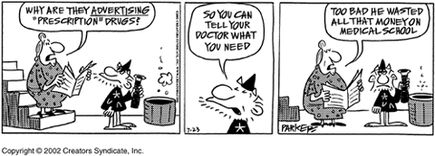

COPYRIGHT NOTICE: The content of this web module may not be copied
or used in any manner without permission of the authors.
 Under Construction
11/8/2005 - Pharmaceutical Industry spends
Under Construction
11/8/2005 - Pharmaceutical Industry spends
$80 million to defeat Proposition 79 in California.
Healhty Lungs Healthy Life
Visit our Goodhealth Web Site

Now is the Time for Price Controls on Prescription Drugs
Samuel Garten, Ph.D., M.S., M.S., CPT, ACPT, NREMT-B and
R. Victor Falkner, M.A., M.S., M.A.L.S.
As a starter - We applaud - Health Access California -
for getting
Proposition 79 on the ballot for November in California.
People of California must get behind this proposition and make sure it
succeeds. Proposition 79 will allow California
to negotiate for cheaper prescription drugs, similar to Canada and most
other countries throughout the world.
Now is the time - We Must Take America Back
(Robert F. Kennedy, Jr.) from the lobbyists
serving big business interests
that seem to dictate to congress on what laws should be passed.
Skyrocketing medical costs are affecting the hiring practices of employers..
A Price Waterhouse Cooper Survey found that half of large U.S. companies -
say healthcare costs have cut profits over
he past year. A quarter of these
companies surveyed said cost increase might force them to cut employee
pay increases
and 1/5 said they might slow hiring of new employees because of higher health
care cost.
Proposition 79 - can reduce employer's
health premiums by authorizing a new purchasing pool
to reduce prices for
employer-paid coverage.
The United States spent more than twice per person what other countries
spent on health care but were not the healthiest
people in the world. Medical expenses were 47% higher per citizen than the
next closes provider - Switzerland.

Prescription drug costs are the fastest-growing portion of health-care spending
nationwide, rising to 10.7% of health
spending from 5.8% in 2003. The report by the Federal Government's Accountability Office found the price of 96 drugs
used by older Americans rose 24.5% from January 2000 through December 2004.
Twenty of the medications accounted for
almost two-thirds of the increase. Pfizer's cholesterol-lowering drug Lipitor
and pain pill Celebrex led the increase
in retail drug prices heavily used by older people, from 2000 to 2004,
according to the government report.
England spends far less than the United States on drugs, not only because of
usage restrictions but also because the government sets limits on the profits
drug companies are allowed to make. Even after adding out-of-pocket costs,
England's per capita drug bill is less than half of that in the United States -
about $340 a year per English person versus about $800 per American.
(The Wall Street Journal, 11/22/2005)
More and more people have to decide to buy medication or put food on the table. The most vulnerable to the high cost of
prescription drugs are the people with no medical insurance. The elderly on fixed incomes struggle to pay for life-saving
prescription drugs that have risen in price by more than 15% a year - 5 times
the rate of inflation for the past several
years.. 29% of Americans failed to fill a prescription in 2000 because
they could not afford it. While families struggle
to pay for medications - drug makers prosper.
Drug companies are laughing all the way to the bank..They know by spending millions on lobbyists - some former government
employees of the same government agencies the drug companies want to influence - they're going to get their way.
Many blame the industry's clout in congress and with the executive branch
for the high prices of drugs. (Global drug companies make the bulk of their
profits in the US..)
The pharmaceutical and health products industry has spent more than
$800 million on federal lobbying and
campaign donations at the federal and state levels in the past 7 years(Center for
Public Integrity). Its lobbying operation, on which it reports spending more
than $675 million is the biggest in the nation.
 No other industry has spent more money to sway public policy for that
period of time.
Of the 20 largest pharmaceutical
corporations, 9 are based in the US. Yet drugs in the U.S. are more expensive
than in any other part of the world.
No other industry has spent more money to sway public policy for that
period of time.
Of the 20 largest pharmaceutical
corporations, 9 are based in the US. Yet drugs in the U.S. are more expensive
than in any other part of the world.
Back in 1998 we were some of the first concerned citizens along with
U.S. Representative Tom Allen (District 1, Maine)
about the high prices of prescription drugs especially for the elderly and the uninsured.
We thought at this time the new senator elect from N.C., John Edwards -
the so-called People's Senator, would work closely with Congressman Allen to
help battle the pharmaceutical
companies influence and help pass the "Prescription Drug Fairness Act."
Importation of drugs from places like Canada is only a short term solution.
We need a permanent program of price controls like other
developed countries. A bulk-buying program similar to that for Veterans
may work and would then lower drug prices and save the states, consumers
and employees
hundreds of million dollars per year. At present a Veteran
can get your prescription drug for about
1/2 of what a typical uninsured American pays.
If we start to Take America Back - the
people band together for a common cause we can still get our way no matter
how
much drug companies pay to convince the senators and congressman in their favor.
While must governments worldwide have regulated drug prices, the
pharmaceutical industry has been able to block a host of
measures aimed at controlling the process in the United States.
Widespread advertising of prescription drugs to consumers - FDA to re-evaluate
direct-to-consumer drugs ad.. - in 1997 the
FDA opened a Pandora's box when it changed the rules to permit widespread
advertising of prescription drugs to consumers.
but health professionals. Last year, the pharmaceutical industry spent over
$4 billion on TV and radio commercials, print
ads and Web-based promotions to the public. But a chorus of criticism from
Congress, physicians and the public has the
FDA and the drug industry scrambling to re-evaluate this strategy. This year
the AMA considered resolutions urging
restrictions or even an outright ban on direct-to-consumer commercials.
A recent Kaiser Family Foundation study has found that for every dollar a
pharmaceutical company invests in advertising to consumers, it
rings up $4.20 in prescription drug sales.
The FDA will hold meetings (November 2-3, 2005)that could produce the first
significant changes to drug advertising.

Except for New Zealand no other industrialized nation permits advertising of prescription medicines directly to consumers.
(Joe & Teresa Graedon 8/21/2005)
We know of at least one drug company that pays its executives large sums of money while charging their employees
a monthly fee to use the wellness center on site.
Did you ever wonder how drug store chains like Walgreen's, CVS and Eckerd's can afford to build all those beautiful
drug stores springing up all over the country. The pharmacist encourages you
to buy the generic version of the medication
prescribed - you think gee these are nice people they want to
save me some
money. Don't be so naïve.
Paul Moriarty, a consumer specialist working for KYW-TV in Philadelphia did a comparison study of the cost one generic
drug in various stores. He found that Enalapril, an antihypertensive agent, the generic version of Vasotec, selling for
$60 at Walgreens and $68 at Eckerd Drugs, even though it costs them about $5, a 1,300 percent mark up. He, too, found
Costco to be the cheapest with a cost for Enalapril, for example, of $12.97.
He also found lower prices at Wal-Mart and K-Mart, but not as low as Costco. I just had a prescription filled for
penicillin because of an abscessed tooth and the pharmacy technician told me that CVS charges a "filling fee" to
help pay for the pharmacist's time, the technician and also the paper work that has to be done to fill the prescription.
.
Let's Take America Back - starting with
the people of California voting in favor of
Proposition 79. As is usually the case, rest of the country is waiting
to follow the lead.
We Must Take America Back